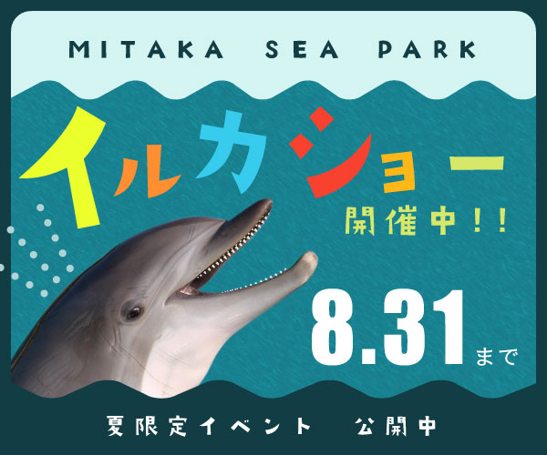

作品について
波型のカットとイルカの写真で一目で水族館や生き物らしさを出し、背景が間延びして飽きないようほんのり質感を入れた。
メインタイトルをカラフルにして動きを出して、小さい子供が楽しめることをアピール。

portfolio
夏休みに開催されるイルカショーの広告。お子様の夏休みや、ご家族の夏季休暇に水族館へのお出かけを促す。

1時間30分

小学生までのお子様がいるご家族。
近接
整列
強弱
反復
波型のカットとイルカの写真で一目で水族館や生き物らしさを出し、背景が間延びして飽きないようほんのり質感を入れた。
メインタイトルをカラフルにして動きを出して、小さい子供が楽しめることをアピール。